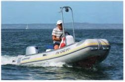
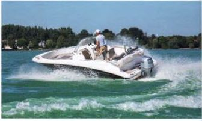
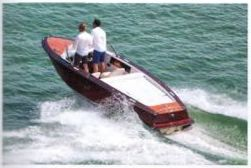
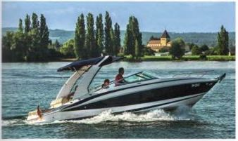
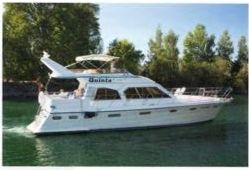

ТИПЫ ЛОДОК
Моторные лодки бывают самых разных форм и типов. Их классифицируют по определенным конструктивным особенностям или
типу двигателя.
Даже самая маленькая открытая гребная лодка становится моторной лодкой, если к транцу прикрепить подвесной мотор.

Надувные лодки выпускаются в трех вариантах: во-первых, это складные лодки длиной до 4,5 м
с портативными подвесными моторами мощностью до 20 л.с.
Во-вторых, это шлюпки по стандарту DIN 7870 с надувными баллонами, которые обычно имеют более двух камер.
Это обеспечивает плавучесть лодки даже при повреждении одной из воздушных камер.
И в-третьих, так называемые RIB (жесткие надувные лодки), днище которых жестко изготовлено из стеклопластика (GRP).
Надувные лодки обычно предлагаются длиной до 6 м и с мощностью двигателя до 90 л.с. (66 кВт).

Моторные лодки с подвесным мотором имеют закрытую носовую палубу и два или четыре сиденья,
расположенные в виде цельной скамьи на более простых лодках и спинками друг к другу на более комфортабельных
вариантах.
Эти сиденья можно раздвинуть, чтобы создать шезлонги. Также обычно имеются небольшие отсеки для хранения вещей по
бокам
и сзади рядом с моторным отсеком. Это очень быстрые и спортивные лодки с двигателями мощностью до 100 л.с. (73 кВт) и
длиной до 5 метров.
Начиная с этого размерного диапазона,

Спортивные катера с внутренним двигателем, иногда называемые прогулочными катерами.
Они имеют встроенный топливный бак; в остальном интерьер практически не отличается от лодок с подвесными
двигателями.
В переходном сегменте одна и та же лодка часто предлагается как в варианте с подвесным, так и с внутренним
двигателем.
Более крупные лодки, естественно, предлагают больший комфорт при управлении и более полную приборную панель.
Длина до примерно 6,80 м, мощность двигателя до примерно 170 л.с. (125 кВт).

Круизный катер (Daycruiser) для дневных прогулок имеют элегантные линии спортивной лодки, поскольку
у них отсутствует надстройка с каютой,
но они по-прежнему являются чисто каютными крейсерами. Каюта встроенна в носовую палубу, она обычно содержит
только небольшие отсеки для хранения и два спальных места, иногда также небольшую кухонную зону с раковиной
(камбуз).
Каюта обязательно имеет низкий потолок и предлагает мало комфорта для проживания.
Как следует из английского названия, это лодка, предназначенная скорее для дневных поездок.
Длина до примерно 7,20 м, мощность двигателя до примерно 200 л.с. (146 кВт), с одним или двумя двигателями.
Каютные крейсеры (Kajutboote) имеют закрытую каюту, в которой часто также располагается пост
управления.
Помимо обычной носовой каюты, может быть и кормовая каюта. Они предлагают скромные или комфортабельные удобства,
включая спальное место.
К этой категории относятся суда длиной от 7 до 12 метров. Ранее распространенные термины «круизер» или «моторный
крейсер»
для судов длиной около 8,50 метров и более в значительной степени исчезли из обихода. Однако они точно описывают их
предназначение:
это суда, подходящие для длительных путешествий (круизов). Они предлагают просторные комфортабельные спальные места,
отдельный туалет с душем и полностью оборудованный камбуз. Они имеют достаточно места для хранения необходимых
припасов и,
соответственно, большие баки для питьевой воды и топлива. Часто, по крайней мере, на более крупных судах, у них есть
второй пост
управления на крыше каюты, так называемый флайбридж. Оборудованная диванами, она часто достигает размеров небольшой
солнечной палубы.
Каютный катер или лодка могут быть оснащены одним или двумя двигателями, бензиновыми или дизельными.

Как и моторные яхты: первоначальным критерием для моторной яхты было наличие более одной палубы.
В любом случае, это яхты длиной около 13 метров с несколькими отдельными жилыми, спальными и санузловыми отсеками,
а также каютами для боцмана или дополнительного оплачиваемого экипажа. Их топливные баки рассчитаны на более
длительные плавания.
Назад Вперед